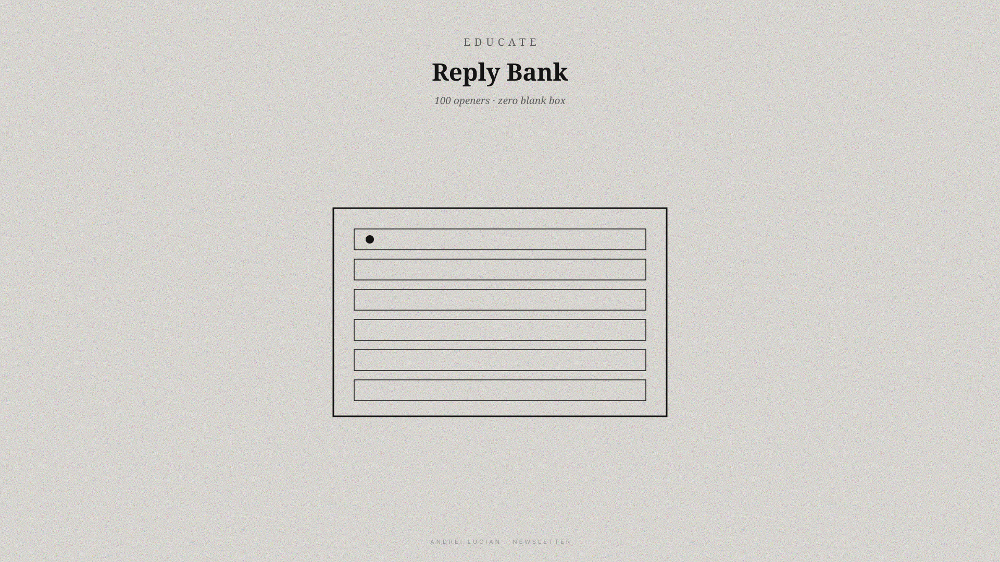
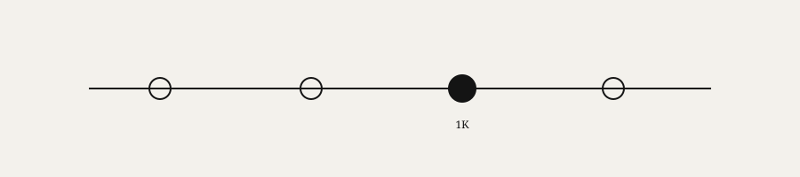

Replies are half the game on 𝕏
The reply bank is inside.
Happy Friday.
Monday we covered learning to write online. Wednesday I wrote about feeling behind — like you're shouting into a void. Here's the bridge between those two: visibility.
If you're under 1K on 𝕏, replies are half the growth game. Posting alone is half a strategy.

Problem: most people freeze in the comment box. "What do I say?" So they scroll instead. I did that for months.
The X System includes a reply bank — 100+ openers you personalize in ten seconds. Agreement. Question. Story. Challenge. Send. Move on.
Daily command center: 30–45 minutes. Profile check. One post. Twenty replies. Five DMs. Done.
Also inside: thread starters, 90-day plan to 1K, templates, profile fix, tracker, writing playbooks, bonus vault.
€47 launch. Then €147.
Marcus: 0 → 1,000 in 74 days. Heavy on replies. No viral moment.
Growth isn't only posting. It's being visible where your people already are.
I went from invisible to inbound by commenting before I had confidence to post. The reply bank removed the excuse.
Grab The X System. Start tomorrow. €47 launch. Pay once.
Landing: https://andreilucian.com/0-to-1K-X-System/LANDING.html
Checkout: https://andreilucian.gumroad.com/l/thexsystem
The X System — 0 → 1K Followers in 90 Days. The 90-day operating system for creators stuck under 1K — fix your profile, copy-paste what to post, reply strategically, execute daily.
Inside: daily command center · 90+ templates · reply bank · profile fix · 90-day tracker · thread starters · playbooks · bonus vault.
Launch €47 (then €147). Pay once. No upsells.
Thank you for reading.
– Andrei
When You're Ready, Here's How I Can Help You:

The 0→1K Daily System
Hit 1,000 followers on 𝕏 in 90 days — daily checklist, copy-paste templates, and engagement scripts in folders you open every morning.
€147 €47
Get Instant Access →